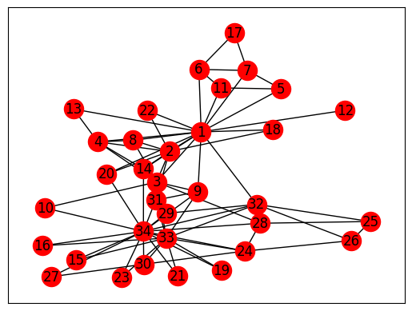
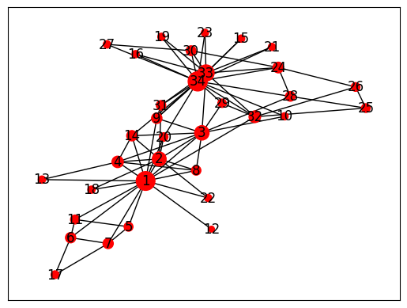
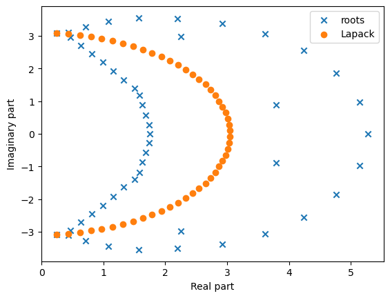
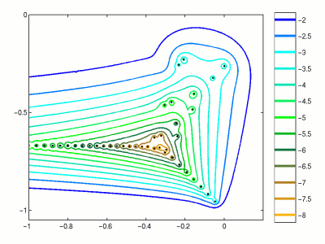

from IPython.display import YouTubeVideo
YouTubeVideo("VcCcMZo6J6w")Recap of the previous lecture
- Linear systems
- Gaussian elimination
- LU decomposition
- Condition number as a measure of forward stability of the problem
Today lecture
Today we will talk about: - Eigenvectors and their applications (PageRank) - Gershgorin circles - Computing eigenvectors using power method - Schur theorem - Normal matrices
What is an eigenvector?
- Definition. A vector x \ne 0 is called an eigenvector of a square matrix A if there exists a number \lambda such that
Ax = \lambda x.
The number \lambda is called an eigenvalue. The name eigenpair is also used.
Since A - \lambda I should have a non-trivial kernel, eigenvalues are the roots of the characteristic polynomial
\det (A - \lambda I) = 0.
Eigendecomposition
If matrix A of size n\times n has n eigenvectors s_i, i=1,\dots,n:
As_i = \lambda_i s_i,
then this can be written as
A S = S \Lambda, \quad\text{where}\quad S=(s_1,\dots,s_n), \quad \Lambda = \text{diag}(\lambda_1, \dots, \lambda_n),
or equivalently
A = S\Lambda S^{-1}.
- This is called eigendecomposition of a matrix. Matrices that can be represented by their eigendecomposition are called diagonalizable.
Existence
What classes of matrices are diagonalizable?
Simple example can be matrices with all different eigenvalues.
More generally, matrix is diagonalizable iff algebraic multiplicity of each eigenvalue (mutiplicity of eigenvalue in the characteristic polynomial) is equal to its geometric multiplicity (dimension of eigensubspace).
For our purposes the most important class of diagonalizable matrices is the class of normal matrices:
AA^* = A^* A.
- You will learn how to prove that normal matrices are diagonalizable after a few slides (Schur decomposition topic).
Example
- You can simply check that, e.g. matrix
A = \begin{pmatrix} 1 & 1 \\ 0 & 1 \end{pmatrix}
has one eigenvalue 1 of multiplicity 2 (since its characteristic polynomial is p(\lambda)=(1-\lambda)^2), but only one eigenvector \begin{pmatrix} c \\ 0 \end{pmatrix} and hence the matrix is not diagonalizable.
Why eigenvectors and eigenvalues are important?
- Eigenvectors are both important auxiliary tools and also play important role in applications.
Can you give some examples?
Applications of eigenvalues/eigenvectors
- Communication theory: theoretical limit on the amount of information transferred
- Designing bridges (mechanical engineering)
- Designing hifi-audio systems
- Quantum chemistry: all our microworld is governed by the Schrodinger equation which is an eigenvalue problem:
H \psi = E \psi,
- Model order reduction of complex systems
- Graph analysis (PageRank, graph clustering)
Eigenvalues are vibrational frequencies
A typical computation of eigenvectors / eigenvectors is for studying
- Vibrational computations of mechanical structures
- Model order reduction of complex systems
Google PageRank
- One of the most famous eigenvectors computation is the Google PageRank.
- It is not actively used by Google nowadays, but it was one of the main features in its early stages. The question is how do we rank webpages, which one is important, and which one is not.
- All we know about the web is which page refers to which. PageRank is defined by a recursive definition.
- Denote by p_i the importance of the i-th page.
- Then we define this importance as an average value of all importances of all pages that refer to the current page. It gives us a linear system
p_i = \sum_{j \in N(i)} \frac{p_j}{L(j)},
where L(j) is the number of outgoing links on the j-th page, N(i) are all the neighbours of the i-th page. It can be rewritten as
p = G p, \quad G_{ij} = \frac{1}{L(j)}
or as an eigenvalue problem
Gp = 1 p,
i.e. the eigenvalue 1 is already known. Note that G is left stochastic, i.e. its columns sum up to 1. Check that any left stochastic matrix has maximum eigenvalue equal to 1.
Demo
- We can compute PageRank using some Python packages.
- We will use
networkxpackage for working with graphs that can be installed using
conda install networkx
Other packages to work with graphs in Python are igraph and graph-tool
They can be useful in your projects
We will use a simple example of Zachary karate club network.
This data was manually collected in 1977, and is a classical social network dataset.
import jax.numpy as jnp
%matplotlib inline
import matplotlib.pyplot as plt
import networkx as nx
kn = nx.read_gml('karate.gml')
#nx.write_gml(kn, 'karate2.gml')
nx.draw_networkx(kn, node_color="red") #Draw the graph
- Now we can actually compute the PageRank using the NetworkX built-in function.
- We also plot the size of the nodes larger if its PageRank is larger.
pr = nx.algorithms.link_analysis.pagerank(kn)
pr_vector = list(pr.values())
pr_vector = jnp.array(pr_vector) * 3000
nx.draw_networkx(kn, node_size=pr_vector, node_color="red", labels=None)
Computations of eigenvalues
- How to compute eigenvalues and eigenvectors?
There are two types of eigenproblems:
- full eigenproblem (all eigenvalues & eigenvectors are required)
- partial eigenvalues (minimal/maximal eigenvalues, eigenvalues within the specified region are required)
Computation of the eigenvalues via characteristic equations
The eigenvalue problem has the form
Ax = \lambda x,
or
(A - \lambda I) x = 0,
therefore matrix A - \lambda I has non-trivial kernel and should be singular.
That means, that the determinant
p(\lambda) = \det(A - \lambda I) = 0.
- The equation is called characteristic equations and is a polynomial of order n.
- The n-degree polynomial has n complex roots!
Recall the determinant
The determinant of a square matrix A is defined as
\det A = \sum_{\sigma \in S_n} \mathrm{sgn}({\sigma})\prod^n_{i=1} a_{i, \sigma_i},
where - S_n is the set of all permutations of the numbers 1, \ldots, n - \mathrm{sgn} is the signature of the permutation ( (-1)^p, where p is the number of transpositions to be made).
Properties of determinant
Determinant has many nice properties:
1. \det(AB) = \det(A) \det(B)
2. If we have one row as a sum of two vectors, determinant is a sum of two determinants
3. “Minor expansion”: we can expand determinant through a selected row or column.
If you do it via minor expansion, we get exponential complexity in n.
Can we do \mathcal{O}(n^3)?
Eigenvalues and characteristic equation
Now we go back to the eigenvalues.
The characteristic equation can be used to compute the eigenvalues, which leads to naïve algorithm:
p(\lambda) = \det(A - \lambda I)
- Compute coefficients of the polynomial
- Compute the roots
Is this a good idea?
Give your feedback
We can do a short demo of this
import matplotlib.pyplot as plt
import jax.numpy as jnp
import jax
import numpy as np
n = 50
a = [[1.0 / (i - j + 0.5) for i in range(n)] for j in range(n)]
a = np.array(a)
ev = np.linalg.eigvals(a)
#There is a special numpy function for chacteristic polynomial
cf = np.poly(a)
ev_roots = np.roots(cf)
#print('Coefficients of the polynomial:', cf)
#print('Polynomial roots:', ev_roots)
plt.scatter(ev_roots.real, ev_roots.imag, marker='x', label='roots')
b = a + 1e-3 * np.random.randn(n, n)#jax.random.normal(jax.random.PRNGKey(0,), (n, n))
ev_b = np.linalg.eigvals(b)
plt.scatter(ev_b.real, ev_b.imag, marker='o', label='Lapack')
#plt.scatter(ev_roots.real, ev_roots.imag, marker='o', label='Brute force')
plt.legend(loc='best')
plt.xlabel('Real part')
plt.ylabel('Imaginary part')Text(0, 0.5, 'Imaginary part')
Morale
- Do not do that, unless you have a reason.
- Polynomial rootfinding is very ill-conditioned (can be much better, but not with monomials \{1,x,x^2,\dots\}!). Note that Gram matrix of monomials
h_{ij} = \int_0^1 x^i x^j\, dx = \frac{1}{i+j+1},
is the Hilbert matrix, which has exponential decay of singular values. - So, monomials are “almost” linearly dependent.
Gershgorin circles
There is a very interesting theorem that sometimes helps to localize the eigenvalues.
It is called Gershgorin theorem.
It states that all eigenvalues \lambda_i, i = 1, \ldots, n are located inside the union of Gershgorin circles C_i, where C_i is a disk on the complex plane with center a_{ii} and radius
r_i = \sum_{j \ne i} |a_{ij}|.
- Moreover, if the circles do not intersect they contain only one eigenvalue per circle.
- The proof is instructive since it uses the concepts we looked at the previous lectures.
Proof
First, we need to show that if the matrix A is strictly diagonally dominant, i.e.
|a_{ii}| > \sum_{j \ne i} |a_{ij}|, then such matrix is non-singular.
We separate the diagonal part and off-diagonal part, and get
A = D + S = D( I + D^{-1}S),
and \Vert D^{-1} S\Vert_1 < 1. Therefore, by using the Neumann series, the matrix I + D^{-1}S is invertible and hence A is invertible.
Now the proof follows by contradiction:
- if any of the eigenvalues lies outside all of the circles, the matrix (A - \lambda I) is strictly diagonally dominant
- thus it is invertible
- that means, that (A - \lambda I) x = 0 means x = 0.
A short demo
import jax.numpy as jnp
%matplotlib inline
n = 3
fig, ax = plt.subplots(1, 1)
a = [[5, 1, 1], [1, 0, 0.5], [2, 0, 10]]
#a = [[1.0 / (i - j + 0.5) for i in xrange(n)] for j in xrange(n)]
a = jnp.array(a)
#a = np.diag(np.arange(n))
a = a + 2 * jax.random.normal(jax.random.PRNGKey(0), (n, n))
#u = np.random.randn(n, n)
#a = np.linalg.inv(u).dot(a).dot(u)
xg = jnp.diag(a).real
yg = jnp.diag(a).imag
rg = jnp.zeros(n)
ev = jnp.linalg.eigvals(a)
for i in range(n):
rg = jax.ops.index_update(rg, jax.ops.index[i], jnp.sum(jnp.abs(a[i, :])) - jnp.abs(a[i, i]))
crc = plt.Circle((xg[i], yg[i]), radius=rg[i], fill=False)
ax.add_patch(crc)
plt.scatter(ev.real, ev.imag, color='r', label="Eigenvalues")
plt.axis('equal')
plt.legend()
ax.set_title('Eigenvalues and Gershgorin circles')
fig.tight_layout()--------------------------------------------------------------------------- AttributeError Traceback (most recent call last) Cell In[7], line 17 15 ev = jnp.linalg.eigvals(a) 16 for i in range(n): ---> 17 rg = jax.ops.index_update(rg, jax.ops.index[i], jnp.sum(jnp.abs(a[i, :])) - jnp.abs(a[i, i])) 18 crc = plt.Circle((xg[i], yg[i]), radius=rg[i], fill=False) 19 ax.add_patch(crc) AttributeError: module 'jax.ops' has no attribute 'index_update'

Note: There are more complicated figures, like Cassini ovals, that include the spectrum
C_{ij} = \{z\in\mathbb{C}: |a_{ii} - z|\cdot |a_{jj} - z|\leq r_i r_j\}, \quad r_i = \sum_{l\not= i} |a_{il}|.
Power method
- We are often interested in the computation of the part of the spectrum, like the largest eigenvalues or smallest eigenvalues.
- Also it is interesting to note that for the Hermitian matrices (A = A^*) the eigenvalues are always real (prove it!).
- A power method is the simplest method for the computation of the largest eigenvalue in modulus.
- It is also our first example of the iterative method and Krylov method.
Power method
- The eigenvalue problem
Ax = \lambda x, \quad \Vert x \Vert_2 = 1 \ \text{for stability}.
can be rewritten as a fixed-point iteration. - This iteration is called power method and finds the largest in modulus eigenvalue of A.
Power method has the form
x_{k+1} = A x_k, \quad x_{k+1} := \frac{x_{k+1}}{\Vert x_{k+1} \Vert_2}
and
x_{k+1}\to v_1,
where Av_1 = \lambda_1 v_1 and \lambda_1 is the largest eigenvalue and v_1 is the corresponding eigenvector.
- On the (k+1)-th iteration approximation to \lambda_1 can be found as
\lambda^{(k+1)} = (Ax_{k+1}, x_{k+1}),
Note that \lambda^{(k+1)} is not required for the (k+2)-th iteration, but might be useful to measure error on each iteration: \|Ax_{k+1} - \lambda^{(k+1)}x_{k+1}\|.
The convergence is geometric, but the convergence ratio is q^k, where q = \left|\frac{\lambda_{2}}{\lambda_{1}}\right| < 1, for \lambda_1>\lambda_2\geq\dots\geq \lambda_n and k is the number of iteration.
It means, the convergence can be artitrary small. To prove it, it is sufficient to consider a 2 \times 2 diagonal matrix.
Convergence analysis for A=A^*
Let’s have a more precise look at the power method when A is Hermitian. In two slides you will learn that every Hermitian matrix is diagonalizable. Therefore, there exists orthonormal basis of eigenvectors v_1,\dots,v_n such that Av_i = \lambda_i v_i. Let us decompose x_0 into a sum of v_i with coefficients c_i:
x_0 = c_1 v_1 + \dots + c_n v_n.
Since v_i are eigenvectors, we have
\begin{split} x_1 &= \frac{Ax_0}{\|Ax_0\|} = \frac{c_1 \lambda_1 v_1 + \dots + c_n \lambda_n v_n}{\|c_1 \lambda_1 v_1 + \dots + c_n \lambda_n v_n \|} \\ &\vdots\\ x_k &= \frac{Ax_{k-1}}{\|Ax_{k-1}\|} = \frac{c_1 \lambda_1^k v_1 + \dots + c_n \lambda_n^k v_n}{\|c_1 \lambda_1^k v_1 + \dots + c_n \lambda_n^k v_n \|} \end{split}
Now you see, that
x_k = \frac{c_1}{|c_1|}\left(\frac{\lambda_1}{|\lambda_1|}\right)^k\frac{ v_1 + \frac{c_2}{c_1}\frac{\lambda_2^k}{\lambda_1^k}v_2 + \dots + \frac{c_n}{c_1}\frac{\lambda_n^k}{\lambda_1^k}v_n}{\left\|v_1 + \frac{c_2}{c_1}\frac{\lambda_2^k}{\lambda_1^k}v_2 + \dots + \frac{c_n}{c_1}\frac{\lambda_n^k}{\lambda_1^k}v_n\right\|},
which converges to v_1 since \left| \frac{c_1}{|c_1|}\left(\frac{\lambda_1}{|\lambda_1|}\right)^k\right| = 1 and \left(\frac{\lambda_2}{\lambda_1}\right)^k \to 0 if |\lambda_2|<|\lambda_1|.
Things to remember about the power method
- Power method gives estimate of the largest eigenvalue in modulus or spectral radius of the given matrix
- One step requires one matrix-by-vector product. If the matrix allows for an \mathcal{O}(n) matvec (for example, it is sparse), then power method is tractable for larger n.
- Convergence can be slow
- If only a rough estimate is needed, only a few iterations are sufficient
- The solution vector is in the Krylov subspace \{x_0, Ax_0,\dots,A^{k}x_0\} and has the form \mu A^k x_0, where \mu is the normalization constant.
Matrix decomposition: the Schur form
There is one class of matrices when eigenvalues can be found easily: triangular matrices
A = \begin{pmatrix} \lambda_1 & * & * \\ 0 & \lambda_2 & * \\ 0 & 0 & \lambda_3 \\ \end{pmatrix}.
The eigenvalues of A are \lambda_1, \lambda_2, \lambda_3. Why?
Because the determinant is
\det(A - \lambda I) = (\lambda - \lambda_1) (\lambda - \lambda_2) (\lambda - \lambda_3).
- Thus, computing the eigenvalues of triangular matrices is easy. Now, the unitary matrices come to help.
- Let U be a unitary matrix, i.e. U^* U = I. Then
\det(A - \lambda I) = \det(U (U^* A U - \lambda I) U^*) = \det(UU^*) \det(U^* A U - \lambda I) = \det(U^* A U - \lambda I),
where we have used the famous multiplicativity property of the determinant, \det(AB) = \det(A) \det(B). - It means, that the matrices U^* A U and A have the same characteristic polynomials, and the same eigenvalues.
If we manage to make U^* A U = T where T is upper triangular, then we are done.
Multplying from the left and the right by U and U^* respectively, we get the desired decomposition:
A = U T U^*.
This is the celebrated Schur decomposition. - Recall that unitary matrices imply stability, thus the eigenvalues are computed very accurately.
The Schur decomposition shows why we need matrix decompositions: it represents a matrix into a product of three matrices with a convenient structure.
Schur theorem
Theorem: Every A \in \mathbb{C}^{n \times n} matrix can be represented in the Schur form A = UTU^*, where U is unitary and T is upper triangular.
Sketch of the proof. 1. Every matrix has at least 1 non-zero eigenvector (take a root of characteristic polynomial, (A-\lambda I) is singular, has non-trivial nullspace). Let
Av_1 = \lambda_1 v_1, \quad \Vert v_1 \Vert_2 = 1
- Let U_1 = [v_1,v_2,\dots,v_n], where v_2,\dots, v_n are any vectors othogonal to v_1. Then
U^*_1 A U_1 = \begin{pmatrix} \lambda_1 & * \\ 0 & A_2 \end{pmatrix},
where A_2 is an (n-1) \times (n-1) matrix. This is called block triangular form. We can now work with A_2 only and so on.
Note: Since we need eigenvectors in this proof, this proof is not a practical algorithm.
Application of the Schur theorem
Important application of the Schur theorem: normal matrices.
Definition. Matrix A is called normal matrix, if
AA^* = A^* A.
Q: Examples of normal matrices?
Examples: Hermitian matrices, unitary matrices.
Normal matrices
Theorem: A is a normal matrix, iff A = U \Lambda U^*, where U is unitary and \Lambda is diagonal.
Sketch of the proof: - One way is straightforward (if the decomposition holds, the matrix is normal).
- The other is more complicated. Consider the Schur form of the matrix A. Then AA^* = A^*A means TT^* = T^* T.
- By looking at the elements we immediately see, that the only upper triangular matrix T that satisfies TT^* = T^* T is a diagonal matrix!
Important consequence
Therefore, every normal matrix is unitary diagonalizable, which means that it can be diagonalized by unitary matrix U.
In other words every normal matrix has orthogonal basis of eigenvectors.
How we compute the Schur decomposition?
Everything is fine, but how we compute the Schur form?
This will be covered in the next lecture.
Variational principle for eigenvalues
- In many cases, minimal/maximal eigenvalues are needed
- Then, if A is a Hermitian matrix, the Rayleigh quotient is defined as
R_A(x) = \frac{(Ax, x)}{(x, x)},
and the maximal eigenvalue is the maximum of R_A(x), and the minimal eigenvalue is the minimal of R_A(x).
Thus, we can use optimization method to find these extreme eigenvalues.
This approach will be crucial in the case of partial eigenvalue problem for large sparse matrices
Now, “advanced” concept.
Spectrum and pseudospectrum
For linear dynamical systems given by the matrix A, spectrum can tell a lot about the system (i.e. stability, …)
However, for non-normal matrices, spectrum can be unstable with respect to small perturbations.
In order to measure such perturbation, the notion of pseudospectrum has been developed.
Pseudospectrum
We consider the union of all possible eigenvalues of all perturbations of the matrix A.
\Lambda_{\epsilon}(A) = \{ \lambda \in \mathbb{C}: \exists E, x \ne 0: (A + E) x = \lambda x, \quad \Vert E \Vert_2 \leq \epsilon. \}
- For small E and normal A these will be circules around eigenvalues, for non-normal matrices, the structure can be much different. More details: http://www.cs.ox.ac.uk/pseudospectra/

Summary of todays lecture
- Eigenvalues, eigenvectors
- Gershgorin theorem
- Power method
- Schur theorem
- Normal matrices
- Some advanced topics
Next lecture
- Review of the considered matrix decompositions
- Practical way to compute QR decomposition
- Almost practical method for computing eigenvalues and eigenvectors
Questions?
from IPython.core.display import HTML
def css_styling():
styles = open("./styles/custom.css", "r").read()
return HTML(styles)
css_styling()